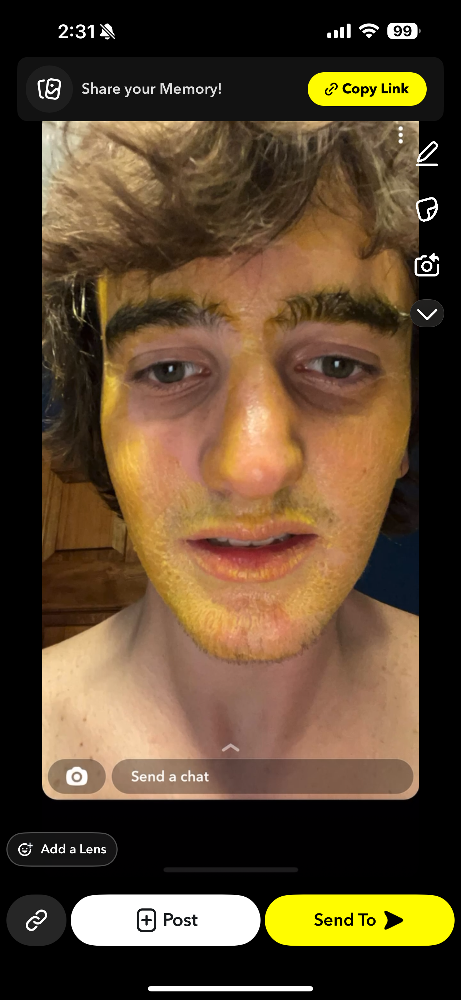

White Gringo is the Artificial Intelligence that helps you learn slow and steady
> sometimes what you have to do is larger than what is to be done in any given way in that you can have questions to ask but when the time comes down to it and when you are taken onto a path not traveled once before you start to wonder and when you do that you have to come down into the light with lots of love and say "white gringo what does this mean"> and then you keep asking questions and you keep asking questions and you keep asking questions and you keep asking questions and you keep asking questions and you keep asking questions and you keep asking questions and you keep asking questions and you keep asking questions
> White Gringo can help you learn Start Chatting